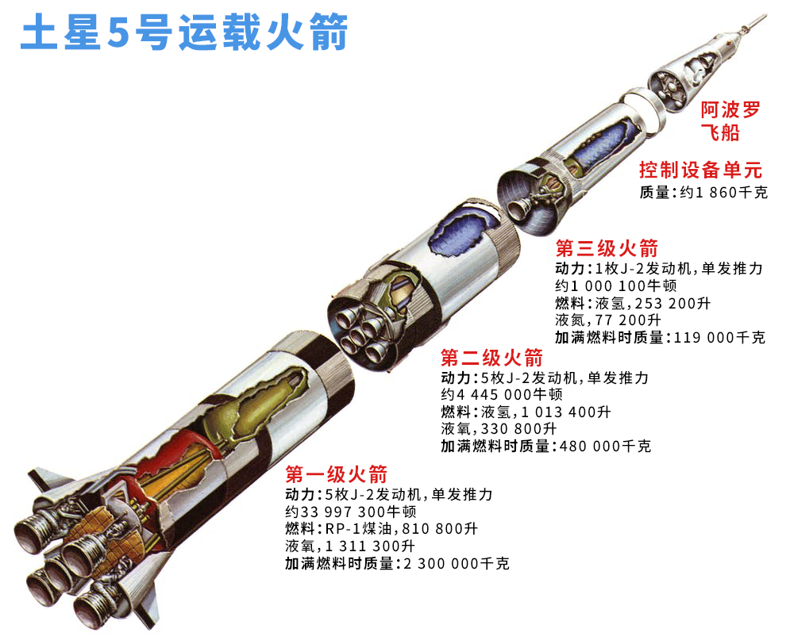

美国航空航天局（NASA）和埃隆·马斯克（Elon Musk）都有着出征火星的梦，远距离航行的载人航天飞行任务也终将如期而至。但有一点你可能不会想到，那就是现代火箭的前进速度并没有过去那么快了。
速度更快的航天飞船在很多方面上都占据优势，而核动力火箭（nuclear powered rocket）就是给飞船加速的一种方法。与传统燃烧燃料的火箭或是现代太阳能电推进火箭相比，核动力火箭具有许多优势，但在过去的40年中，美国只有8次航天发射用到了核反应堆。
在2019年，规范核航天飞行的相关法规发生了变化，下一代火箭的工作也已经重新开始了。
太空旅行的第一步涉及的就是用火箭将飞船发射进入轨道，人们在想到火箭发射时会在脑海中刻画出大型燃烧燃料的发动机，也就是发射火箭，由于地球重力的限制作用，在可预见的未来发射火箭都不太可能消失。
一旦飞船到达太空，事情就会变得有趣起来。为了逃脱地球的引力前往深空中的目的地，飞船需要额外的加速度，这个时候核系统就能发挥作用了。如果宇航员想要探索比月球或者火星更远的地方，他们将需要以非常非常快的速度前进。宇宙如此浩瀚，一切都遥不可及。
火箭速度更快对于长距离太空旅行来说更有利的原因有两个：一是安全性，二是时间性。
前往火星旅行的宇航员将会被暴露在非常高的辐射水平中，这可能导致严重的长期健康问题，例如癌症和不育症。辐射防护能起到一定的保护作用，但是它非常沉重，并且任务越长，需要的防护就越多。减少辐射暴露更好的方法则是更快地到达目的地。
宇航员的人身安全还只是其中一个好处。随着各大太空机构进一步深入太空，从无人飞行任务中尽可能快地获取数据变得非常重要。旅行者2号（Voyager-2）花了漫长的12年时间才到达海王星，飞掠过海王星时拍下了一些令人难以想象的照片。如果旅行者2号具有更快的推进系统，那么天文学家其实可以更早地获得这些照片和其中包含的信息。
高速的优势显而易见，但为什么核系统更快些呢？
一旦飞船逃脱了地球的引力，在比较任何推进系统时都有三个重要方面需要考虑：
· 推力（Thrust）：系统能以多快的速度对飞船进行加速
· 质量效率（Mass efficiency）：对于给定的燃料质量，系统可以产生多少推力
· 能量密度（Energy density）：给定质量的燃料可以产生多少能量
如今，最常用的推进系统是化学推进系统（chemical propulsionsystem），即常规燃烧燃料的火箭推进系统，以及太阳能电推进系统（solar-powered electric propulsion system）。
化学推进系统能提供很大的推力，但化学火箭的质量效率并不是特别高，火箭燃料的能量密度也不高。将宇航员送上月球的土星5号运载火箭（Saturn V）在升空时产生了3500万牛顿的力，运载了95万加仑（约36万升）的燃料。尽管大部分燃料用于使火箭进入轨道，但局限性显而易见：去任何地方都需要大量沉重的燃料。
电推进系统则是利用太阳能电池板产生的电能来产生推力，最常见的方法是使用电场对离子进行加速，例如在霍尔推力器（Hall thruster）中。电推进系统通常用于给卫星供电，其质量效率比化学推进系统高出5倍以上，但是相对而言电推进系统产生的推力却要小得多，大约只有3牛顿，换种更容易理解的说法，也就是只能在大约两个半小时内让汽车从0加速到97千米/小时。电推进系统的能量来源，也就是太阳，本质上是取之无禁用之不竭的，但实际上航天器距离太阳越远，太阳能的作用就越微小。
核动力火箭之所以拥有前途，原因之一就在于它们提供的能量密度之大令人难以置信。核反应堆中使用的是铀（U）燃料，产生的能量密度比典型的化学火箭推进剂肼（N2H4）要高400万倍。与携带成千上万升的化学燃料相比，将少量铀燃料送入太空要容易得多。
除了能量密度，核动力系统的推力和质量效率又如何呢？
工程师为太空旅行设计了两种主要类型的核动力系统。
第一种叫做核热推进（nuclear thermal propulsion），这种系统推力强大且效率适中。核热推进使用的是小型核裂变反应堆，类似于在核潜艇中发现的核裂变反应堆，常采用氢气作为工质（working substance）兼冷却剂，工质流经反应堆后被加热，再经收缩扩张喷管高速喷出，进而提供推力。NASA的工程师估计，相比化学动力驱动，由核热推进技术驱动的火星飞行任务在时长上要短20％-25％。
核热推进系统的质量效率是化学推进系统的两倍以上，这意味着，在使用相同质量的推进剂，核热推进产生的推力是化学推进的两倍多，可提供的推力能达到10万牛顿，也就是足以让汽车在大约四分之一秒的时间内从0加速到97千米/小时的速度。
第二种核动力火箭系统名为核电推进（nuclear electricpropulsion），目前还没有建成的核电系统，工作原理是利用大功率核裂变反应堆发电，将核能转换为电能，为霍尔推进器这样的电推进器提供动力。核电推进将具有非常高的质量效率，大约是核热推进系统的3倍。由于核反应堆可以产生极高的能量，因此可以同时为多个独立的电推进器供电以产生很大的推力。
核电推进系统不受太阳能的限制、具有很高的质量效率，并且可以提供相对较大的推力，因此是执行远程任务的最佳选择。尽管核电火箭拥有如此优越的长处，但在投入使用之前仍有许多技术问题亟待解决。
核热推进系统的研究自1960年代以来就开始了，但到现在为止仍没有应用在太空飞行中。
1970年代，美国首次实施了一系列法规，基本上要求所有的核太空项目都要经过多个政府机构的逐案审查和批准，并且还要获得总统的明确批准。除此之外，核火箭系统研究的资金也非常短缺，这种大环境阻碍了用于太空探索核反应堆的进一步发展。
当特朗普政府在2019年8月发布总统备忘录（presidential memorandum）之时，这一切都发生了改变。在坚持保证核动力发射尽可能安全的前提下，政府的新指示允许使用少量核材料的核任务跳过多机构的批准程序，例如，只需像NASA这样的赞助机构证明任务符合安全建议即可；当然，更大型的核任务还是需要走完此前规定的一系列程序。
随着法规又有了这项新的修订，NASA在2019年的财政预算中获得了1亿美元用于发展核热推进系统。美国国防部高级研究计划局（Defense Advanced Research Projects Agency，DARPA）也在开发太空核热推进系统，旨在让美国国家安全行动能够触及地球轨道之外。
在停滞了60年之后，核动力火箭或将于十年之内飞向太空。这项激动人心的进展无疑将开启太空探索的新纪元：人类将亲身前往火星，科学实验则将在我们的整个太阳系内外进行新的探索与发现。
参考来源：